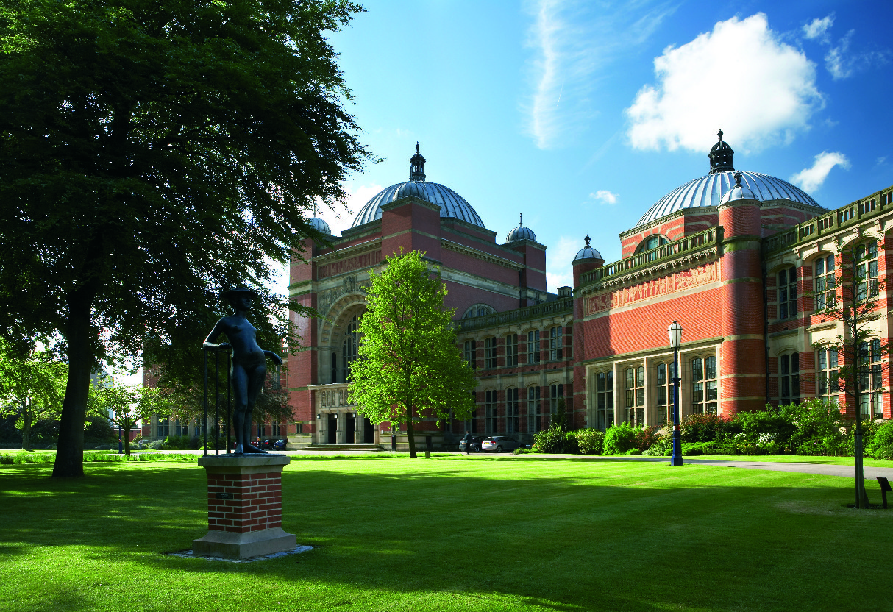

University of Birmingham
Here I earned a first class honours degree in Computer Science, graduating as the top student in my cohort. During my time at Birmingham I conducted an undergraduate research project implementing a deep learning-based computer vision system for handwritten mathematical expression recognition, won The Birmingham Project with IBM, Capgemini Community Challenge, and the university's own Emerging Technology Competition.
